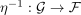
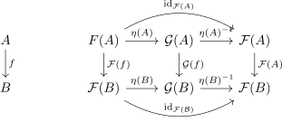

natural isomorphism and isomorphism on the objects
1. Proposition
Let  be categories,
be categories,  be functors and
be functors and  a natural transformation.
a natural transformation.
TFAE:
 is a natural isomorphism with a canonical inverse
is a natural isomorphism with a canonical inverse- for
 it holds, that
it holds, that  is an isomorphism in
is an isomorphism in 
2. Proof
2.1. 1)  2)
2)
By assumption, there exists an

, such that
Analougosly for
η-1 ˆ η =&
(η-1 ˆ η)(A) =& (A)
2.2. 2) 1)
Let
be the unique inverse morphism.
Then following diagram commutes,
hence

Thus following diagram commutes

hence since  is an isomorphism and thus especially also an epimorphism
is an isomorphism and thus especially also an epimorphism
by diagram and pasting epimorphism, it follows that  is natural
is natural
note, that no choice was made, hence can be regarded as canonical.3
a